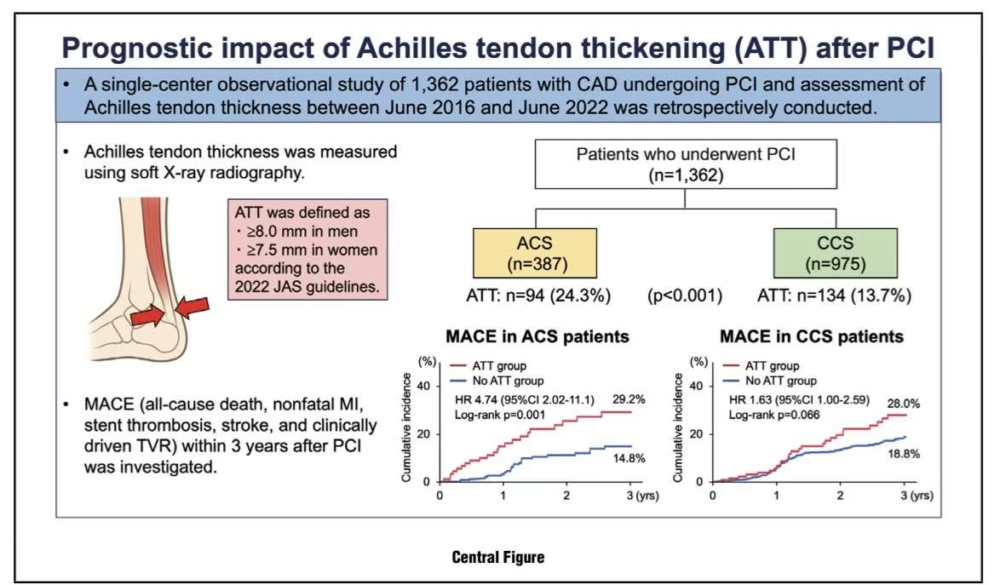

A preliminary study presented at an American Heart Association conference found significantly higher levels of micronanoplastics (tiny plastic particles) in the plaque clogging neck (carotid) arteries compared to healthy arteries. Researchers observed that plaque from individuals who had experienced stroke, mini-stroke, or temporary vision loss contained over 50 times more micronanoplastics than plaque-free artery samples. While the study, building on previous research linking these plastics to worse outcomes, did not find a direct link to sudden inflammation markers, it did note differences in gene activity related to plaque stability and immune cells. The authors suggest these plastics primarily enter the body via environmentally contaminated food and water, cautioning that the findings are from a small study, cannot prove causation, and require further research to understand the biological effects.


Thickened Achilles tendon predicts MACE after stenting: 28.4% vs 17.9%
Louis shares a 2026 Circulation Journal study showing Achilles tendon thickening (at least 8 mm men, 7.5 mm women) predicts major adverse cardiovascular events within three years after PCI, likely reflecting cumulative LDL exposure.